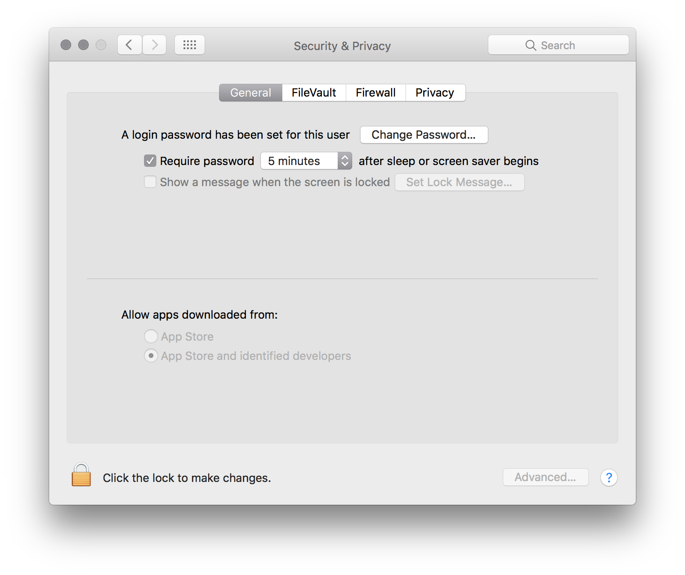

Drop a .keynote file onto the application. Keynote Extractor will start extracting your slides to HTML.
In order to do so, we need to launch the presentation in Keynote. Check out this video to see how it works:
Use the options in the Preferences window to customize your output.
Access the Preferences by clicking the cog wheel () or by the shortcut ⌘,.
This changes the colors your output. Choose between Dark Grey, Black and White.
This changes the type of output. Choose between web page and slideshow. A web page is just a long scrolling web page with the images and text side by side. A slideshow has the slides one by one, with keyboard shortcuts to navigate between slides, and the option to toggle notes on and off.
This allows you to output your slides as JSON in addition to the HTML output. The JSON format is as follows:
[
{
"notes" : " <p>Escaped HTML here<\/p>\n\n",
"image" : "images\/images.001.jpg"
}
]If you use the responsive images functionality, the format is as follows:
[
{
"notes" : " <p>Escaped HTML here<\/p>\n\n",
"image" : "images\/images.001.jpg",
"images" : {
"md" : "images\/images.001-md.jpg",
"lg" : "images\/images.001-lg.jpg",
"sm" : "images\/images.001-sm.jpg"
}
}
]This allows you to output a set of 3 images for every slide, to optimize the slide output on mobile. For every slide, 3 images will be generated, with 3 different widths: 984, 728 and 375. These are used in responsive images code using the srcset attribute. Browser heuristics then determine which images to load.
When you download Keynote Extractor, you might need to give the application your permission to run.
Keynote Extractor needs broad access to your system to be able to create folders in the most user-friendly way (i.e. right where your presentation is, without asking for a file location). Apple provides a way to sandbox applications so they work in more secure ways. We believe that we can't provide the right user experience if we sandbox the application.
